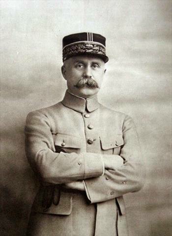

Generaals en soldaten van beide kanten, en de Amerikanen van 1918. Alle foto’s komen van Wikimedia Commons en zijn vrij van rechten (publiek domein); de bron staat bij elke foto.
Elf mensen
Philippe Pétain
Franse generaal, 1856–1951

Pétain vóór 1918Foto: Henri Manuel, before 1918 · Public domain · Wikimedia Commons
Pétain kreeg op 25 februari 1916 het bevel bij Verdun. Hij organiseerde de aanvoer over de Voie Sacrée en liet de divisies na korte tijd aflossen (de ‘noria’). Zo vocht bijna het hele Franse leger een tijd bij Verdun. Op 10 april schreef hij in zijn dagorder: ‘Courage… on les aura!’ In 1917 maakte hij als opperbevelhebber een eind aan de muiterijen, door betere behandeling van de soldaten en voorzichtige aanvallen. Zijn naam is voorgoed beschadigd door zijn rol als leider van het collaborerende Vichy-regime in de Tweede Wereldoorlog; in 1945 werd hij ter dood veroordeeld, wat werd omgezet in levenslang. [1][12]
Nivelle, ≈ 1917Foto: onbekend, circa 1917 · Public domain · Wikimedia Commons
Nivelle nam in mei 1916 het bevel bij Verdun over. In juni gaf hij het bevel ‘Vous ne les laisserez pas passer’, waaruit de leus ‘Ils ne passeront pas’ ontstond. Met Mangin leidde hij de geslaagde tegenaanvallen van oktober en december 1916. Daarna werd hij opperbevelhebber, maar zijn offensief aan de Chemin des Dames (april 1917) mislukte, en hij werd vervangen door Pétain. [2]
Mangin in 1921Foto: Agence de presse Meurisse, 1921 · Public domain · Wikimedia Commons
Mangin leidde de aanvallen die Fort Douaumont (24 oktober 1916) en daarna Louvemont en Bezonvaux heroverden. Hij stond bekend als agressief en had de bijnaam ‘de slachter’ (‘le boucher’), omdat zijn aanvallen veel levens kostten. [3]
Falkenhayn in 1913Foto: Albert Meyer, 1913 · Public domain · Wikimedia Commons
Falkenhayn koos Verdun als doel voor 1916. In zijn memoires (1919) schreef hij dat hij het Franse leger wilde laten ‘leegbloeden’. Volgens veel historici bedacht hij dat pas achteraf: het memorandum waarin hij dat eind 1915 zou hebben geschreven, is nooit gevonden. ⚖️ Omstreden Eind augustus 1916 werd hij vervangen door Hindenburg. [4][12]
De kroonprins in 1912/13Foto: E. Bieber, 1912/13 · Public domain · Wikimedia Commons
De oudste zoon van keizer Wilhelm II voerde het bevel over het 5e leger, dat Verdun aanviel. Hij zei later dat hij al in de zomer van 1916 wilde stoppen. In 1918 vluchtte hij naar Nederland en woonde tot 1923 op het eiland Wieringen. [5]
Driant schreef vóór de oorlog populaire oorlogsromans onder de naam ‘Capitaine Danrit’. Als parlementslid waarschuwde hij eind 1915 dat de verdediging van Verdun te zwak was. Op 21 en 22 februari 1916 hield hij met zijn jagers het Bois des Caures vast; hij sneuvelde op 22 februari. Zijn graf ligt in het bos. [6]
Raynal, ≈ 1920Foto: onbekend, circa 1920 · Public domain · Wikimedia Commons
Raynal was al meermaals gewond toen hij in mei 1916 het bevel over Fort Vaux kreeg. Een week lang hield hij het fort vast, terwijl de Duitsers erop stonden en de gangen in vochten. Met zijn laatste postduif, Vaillant, vroeg hij om hulp. Op 7 juni gaf hij zich over, zonder water. Volgens zijn eigen verslag kreeg hij van de kroonprins een degen als eerbetoon. [7]
Maginot in 1924Foto: onbekend, 1924 · Public domain · Wikimedia Commons
Maginot was al volksvertegenwoordiger, maar ging als soldaat naar het front. In november 1914 raakte hij bij Verdun zwaargewond aan zijn been. Later was hij minister van Oorlog en zette hij zich in voor de bouw van de verdedigingslinie die zijn naam kreeg. Zijn monument staat bij Fleury. [8]
Genevoix in 1915Foto: onbekend, 1915 · Public domain · Wikimedia Commons
Genevoix vocht in 1914–1915 bij de Marne en Les Éparges. Daar raakte hij in april 1915 zwaargewond. Zijn boeken, later gebundeld als ‘Ceux de 14’, behoren tot de beste getuigenissen over het front. Hij was later een van de oprichters van het Mémorial de Verdun. In 2020 werd hij in het Panthéon bijgezet. [11]
Pershing (vóór 1917)Foto: Bain News Service, between 1907 and 1916 · Public domain · Wikimedia Commons
Pershing wilde dat de Amerikanen als één eigen leger vochten, niet verdeeld over Franse en Britse eenheden. In september 1918 leidde hij het Amerikaanse 1e leger bij Saint-Mihiel en daarna in de Meuse-Argonne. [10]
York in 1919Foto: Underwood & Underwood, 1919-05-25 · Public domain · Wikimedia Commons
York kwam uit de bergen van Tennessee en had uit geloofsovertuiging eerst bezwaar tegen vechten. Op 8 oktober 1918 schakelde hij in de Argonne een Duitse mitrailleurstelling uit; met zijn groepje nam hij 132 man gevangen. Hij kreeg de Medal of Honor. De film ‘Sergeant York’ (1941) maakte hem wereldberoemd. [9]